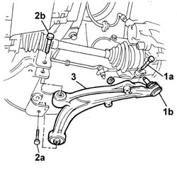
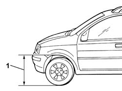
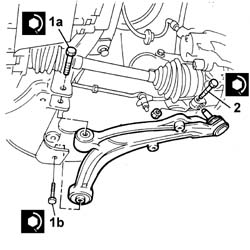

4410B40 lower wishbone (with balljoint) of left or right front suspension (one) - r+r -check wheel geometry separately
- Path
- Procedures > 44 SUSPENSION AND WHEELS > 4410 FRONT SUSPENSION > 4410B front suspension wishbones > 4410B40 lower wishbone (with balljoint) of left or right front suspension (one) - r+r -check wheel geometry separately
- Kind
- repair procedure (removal / refitting; the operation number is the code)
- Applies to
- all engines; all production periods
- Interactive page
- https://sloeber94.github.io/elrnDB-fPnd/en/#/2752798
Applies to: all engines; all production periods
 Removing
Removing
 Refitting
RefittingPosition the vehicle on a lift and raise it.
Or:
1. Undo the bolt (1a) fixing the track control arm ball joint (1b) to the front hub steering knuckle.
2. Undo the bolts (2a) and (2b) securing the track control arm to the crossmember.
3. Remove the lowr front track control arm.

Applies to: all engines; all production periods
Refitting
RemovingReposition the front suspension lower track control arm.
Tighten the bolts fixing the suspension to the crossmember.
Place the vehicle in standard 'A' conditions, i.e. with the spare wheel, tool kit, all fluids and a full tank of fuel. Check that the tyre pressures are correct.
 | Measurement | Value | |
|---|---|---|---|
- | Front wheel pressure (bar) | 2 |
| Measurement | Value | |
|---|---|---|---|
- | Rear wheel pressure (bar) | 1.9 |
1. Check that the distance between the front wing maximum curvature point and the wheel centre is 631 mm.

Applies to: all engines; all production periods
1. Torque tighten the bolts (1a) and (1b) tightened previously securing the track control arm to the crossmember.
 | Fastening | Component | Ø | Value (daNm) |
|---|---|---|---|---|
1a | Bolt | FRONT SUSPENSION LOWER LEVER | M12 x 1.25 | (Crossmember side) 8,5 |
| Fastening | Component | Ø | Value (daNm) |
|---|---|---|---|---|
1b | Bolt | FRONT SUSPENSION LOWER LEVER | M12 x 1.25 | (Crossmember side) 8,5 |
2. Tighten the nut securing the track control arm ball joint to the pillar.
| Fastening | Component | Ø | Value (daNm) |
|---|---|---|---|---|
3 | Nut | FRONT SUSPENSION LOWER LEVER BALL JOINT | M8 | 3.2 |

Applies to: all engines; all production periods
Lower the car and remove it from the ramp.
Topics linked from this page (2)
Topics that link to this page (4)
- H005 POOR DRIVING COMFORT - AT FRONT
- H007 EXCESSIVE ROLLING/PITCHING - AT FRONT
- 4410B42 lower wishbone (complete with balljoint) of front suspension (one-remainder) - r+r following operation 4410b40
- 4410B43 front suspension lower wishbones (with jointed heads) (lh and rh) - r r - checkwheel alignment separately